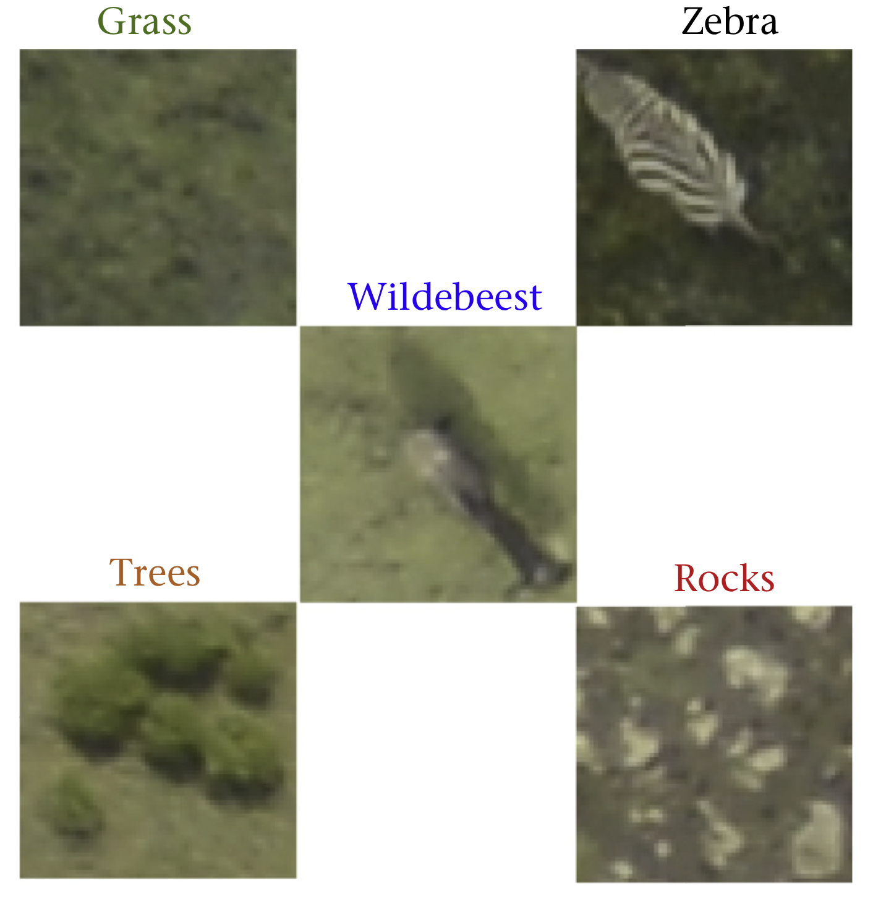
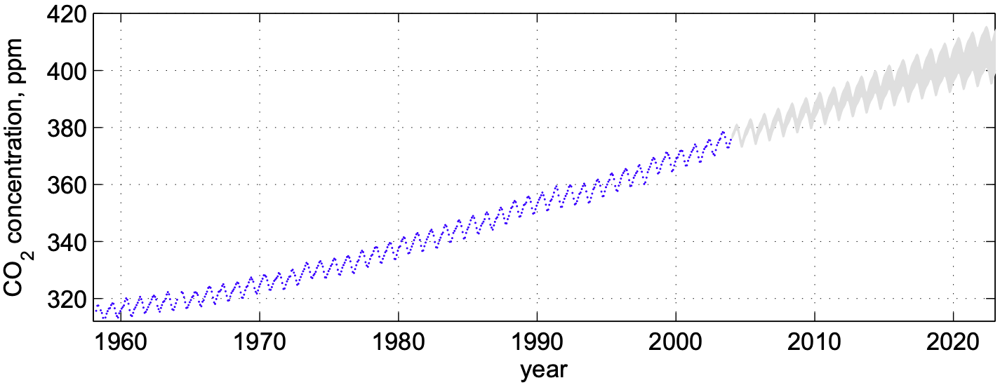
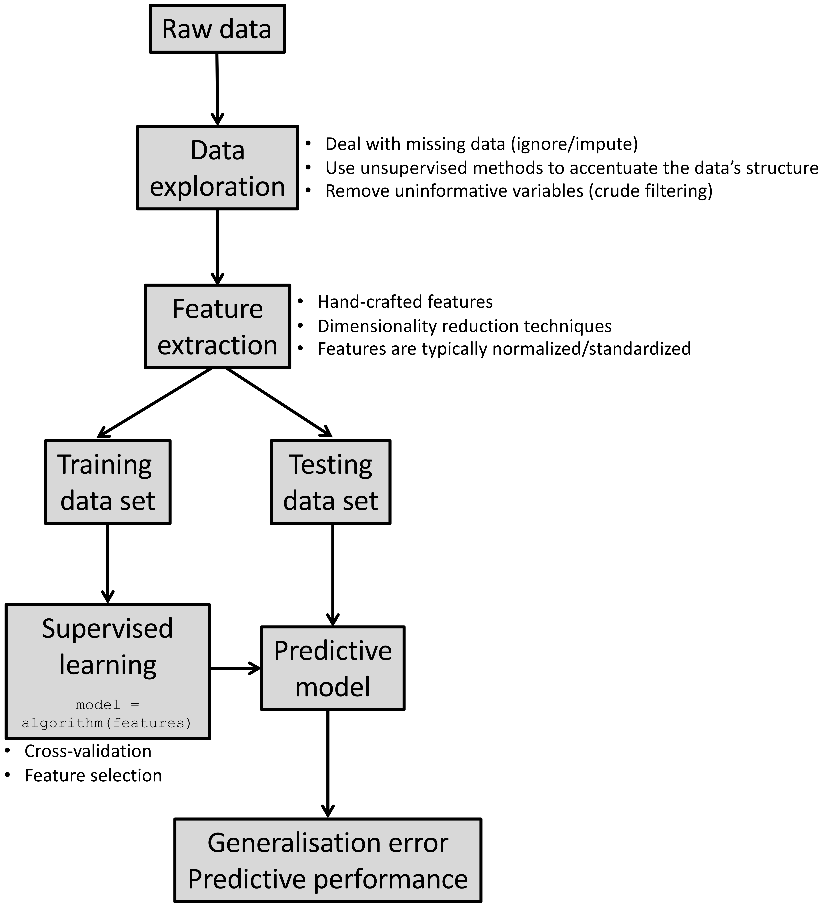
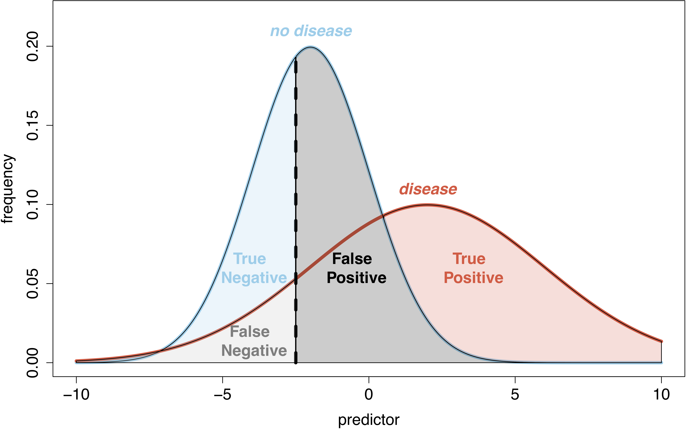
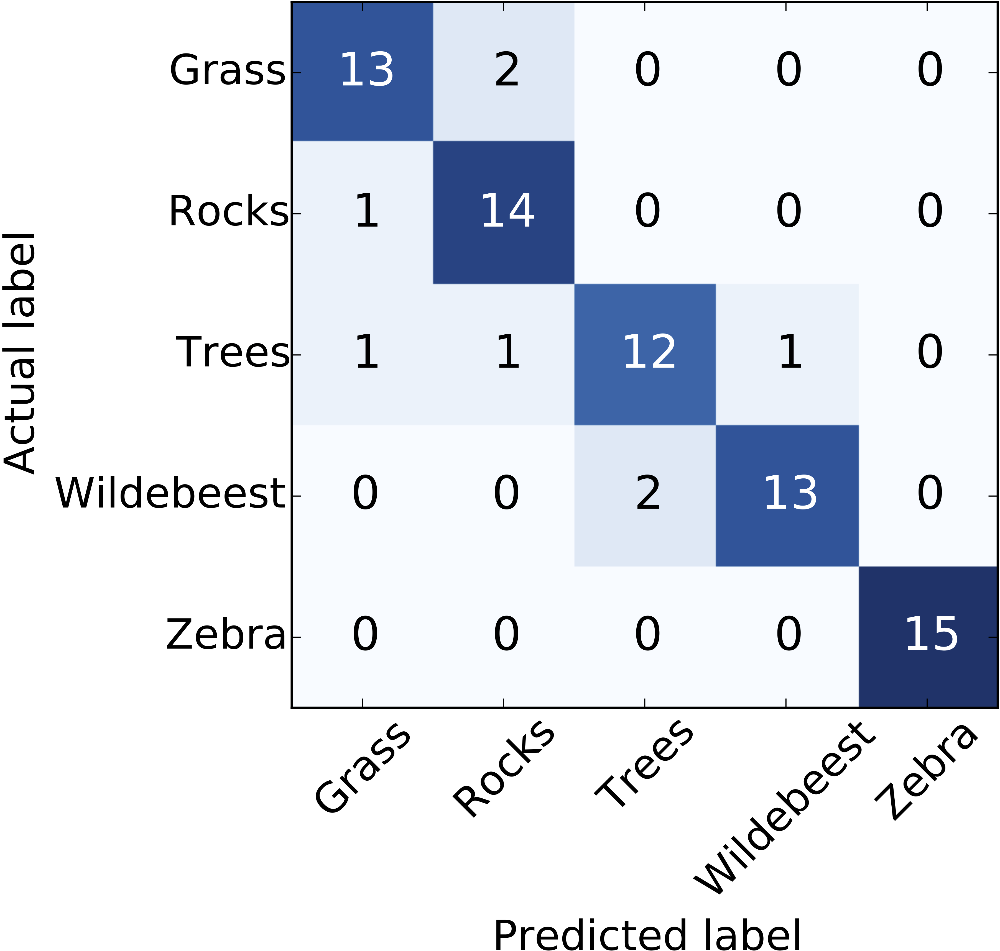
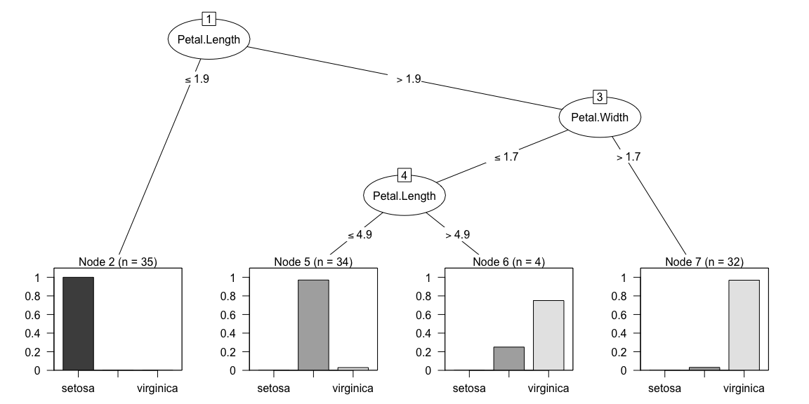
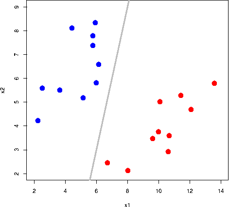
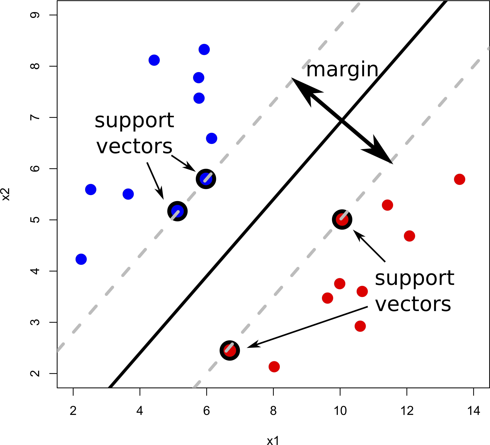
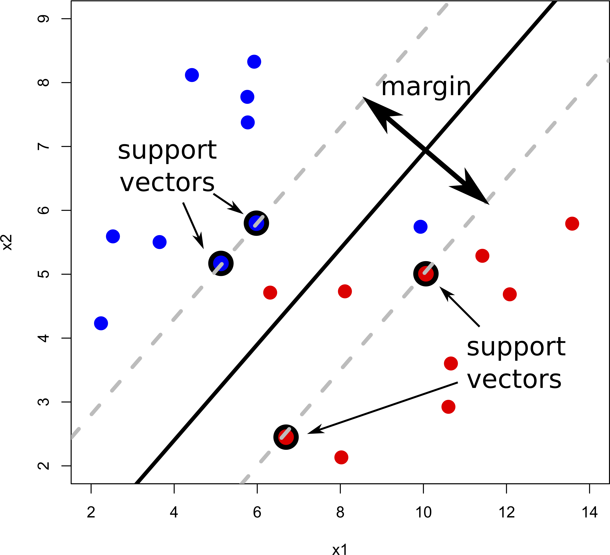
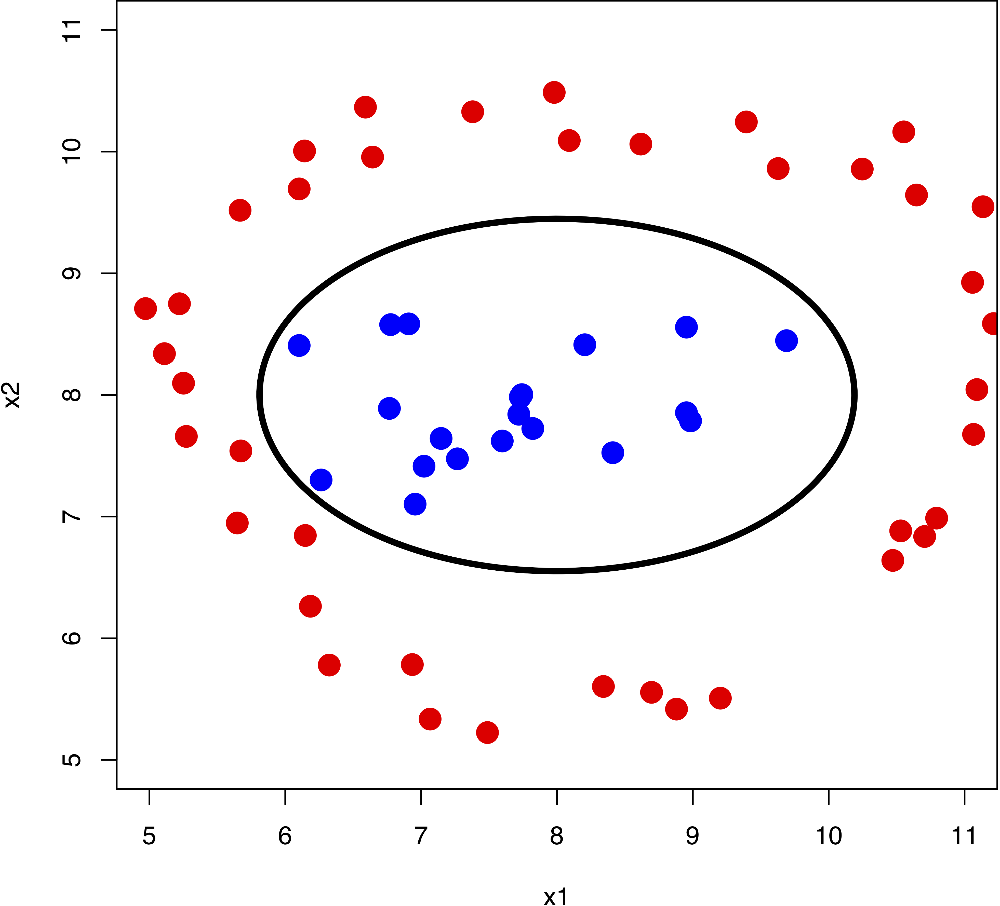

4 Supervised Learning
4.1 Motivation
The picture above was taken from here and depicts the great wildebeest migration from Tanzania’s Serengeti national park to the south of Kenya’s Masai Mara national park.
This migration is of great ecological importance. Conservation biologists are particularly interested in estimating the population of wildebeest and observe how it changes over time. This is typically done through aerial surveys. The result is several thousands of images that an expert need to count manually. This process is of course painstakingly slow and prone to human error. Instead we can segment each image and train a machine learning (ML) algorithm to identify different classes (see here and here).

The graph below shows carbon dioxide concentration (CO\(_2\)) over time measured at the Mauna Loa observatory in Hawaii. The data exhibits seasonal oscillations, together with an increasing trend. Such complex behaviour cannot be captured with classical linear models. Instead supervised learning methods (e.g Gaussian Processes) can be used to learn this complex time-series in order to perform predictions to inform climate change policies, for example.

4.2 What is supervised learning?

Akin to traditional statistical models (e.g. generalised linear models (GLMs)), supervised learning methods determine the mapping (predictive model) between a set of features and a continuous outcome (regression), or a categorical variable (classification).
The observed data is split into a training set, which is used to build the predictive model, whilst the testing data set (not used in model building) is used to compute the expected predictive performance “in the field”. In statistics, this is similar to making inferences about the population based on a finite and random sample.
4.3 What problems can supervised learning solve?
Medical imaging: identifying a tumour as being benign or cancerous.
Gene expression: determining a patient’s phenotype based on their gene expression “signature”.
Computer vision: detecting and tracking a moving object.
Biogeography: predicting land cover usage using remote sensing imagery.
Speech recognition: translating audio signals into written text.
Biometric authentication: identifying a person using their fingerprint.
Epidemiology: predicting the likelihood of an individual to develop a particular disease, given a number of risk factors.
… and much more!
4.4 Cross-validation
ML algorithms can deal with nonlinearities and complex interactions amongst variables because the models are flexible enough to fit the data (as opposed to rigid linear regression models, for example). However, this flexibility needs to be constrained to avoid fitting to noise (overfitting). This is achieved by tuning the model’s hyperparameters.
Hyperparameters are parameters that are not directly learnt by the machine learning algorithm, but affect its structure. For example, consider a simple polynomial regression model:
\[ y = \beta_0 + \beta_1x + \beta_2x^2 + \ldots + \beta_px^p \] The \(\beta\)’s are the model parameters that are inferred/learnt from the data. The degree of the polynomial \(p\), however, is a hyperparameter that dictates the complexity of the model. Hyperparameters are tuned by cross-validation to strike a balance between underfitting and overfitting, known as the bias-variance trade-off (Fig. 4.1a).
Hyperparameter tuning is essentially a form of model selection. Compared to statistical modelling, information criterions and \(p\)-values are replaced by predictive performance measures. Note that in the statistics literature, model selection tends to encompass every aspect of choosing the final model (i.e model structure and which variables and interaction terms to keep). In ML, model selection (the structure of the model) and feature selection (which covariates to keep in the model) tend to be treated separately. Nevertheless, typically, both require some form of cross-validation.
Figure 4.1: Cross-validation
In \(k\)-fold cross-validation the training data are randomly split into \(k\) parts. The model is trained on all but one of the folds, and performance is measured on the part left out in the training process (Fig. 4.1b). The average prediction error is computed from the \(k\) runs and the hyperparameters that minimise this error are used to build the final model (Fig. 4.1c). To make cross-validation insensitive to a single random partitioning of the data, repeated cross-validation is typically performed, where cross-validation is repeated on several random splits of the data.
4.5 Predictive performance measures
In order to perform cross-validation, specifically to compare models with different hyperparameters, we need to evaluate how good a model is. There are several predictive performance measures available in the literature that we can use to this end. Some of the more popular ones are:
- Regression: root mean squared error (RMSE), R-squared
- Classification: area uder the receiver operating characteristic (ROC) curve, confusion matrix

Next, we present a few popular supervised learning methods, focusing
on classification problems (although most methods can tackle regression too).
A rather exhaustive list of ML algorithms can be found in the caret
package, for R users, and the scikit-learn package, for Python users.
I strongly recommend reading the user guide of these packages to familiarise yourself with their interface. Once you choose a particular ML algorithm, make sure to familiarise yourself with its tuning parameters.
4.6 \(k\)-nearest neighbour (\(k\)NN)
Arguably the simplest model available and typically used as a baseline to benchmark other ML algorithms. The rationale behind \(k\)NN is simple; the class label for a particular test point is the majority vote of the surrounding training data:
Compute the distance between test point and every training data point.
Find the \(k\) training points closest to the test point.
Assign test point the majority vote of their class label.
library(caret)
# Split test/train
set.seed(103) # for reproducibility
ii <- createDataPartition(iris[, 5], p=.7, list=F) ## returns indices for train data
xTrain <- iris[ii, 1:4]; yTrain <- iris[ii, 5]
xTest <- iris[-ii, 1:4]; yTest <- iris[-ii, 5]
dim(xTrain)[1] 105 4[1] 45 4# Set training options
# Repeat 5-fold cross-validation, ten times
opts <- trainControl(method='repeatedcv', number=5, repeats=10, p=0.7)
# Find optimal k (model)
set.seed(1040) # for reproducibility
mdl <- train(x=xTrain, y=yTrain, # training data
method='knn', # machine learning model
trControl=opts, # training options
tuneGrid=data.frame(k=seq(2, 15))) # range of k's to try
print(mdl)k-Nearest Neighbors
105 samples
4 predictor
3 classes: 'setosa', 'versicolor', 'virginica'
No pre-processing
Resampling: Cross-Validated (5 fold, repeated 10 times)
Summary of sample sizes: 84, 84, 84, 84, 84, 84, ...
Resampling results across tuning parameters:
k Accuracy Kappa
2 0.9504762 0.9257143
3 0.9600000 0.9400000
4 0.9552381 0.9328571
5 0.9619048 0.9428571
6 0.9666667 0.9500000
7 0.9666667 0.9500000
8 0.9666667 0.9500000
9 0.9676190 0.9514286
10 0.9685714 0.9528571
11 0.9638095 0.9457143
12 0.9638095 0.9457143
13 0.9628571 0.9442857
14 0.9638095 0.9457143
15 0.9676190 0.9514286
Accuracy was used to select the optimal model using the largest value.
The final value used for the model was k = 10.# Test model on testing data
yTestPred <- predict(mdl, newdata=xTest)
confusionMatrix(yTestPred, yTest) # predicted/trueConfusion Matrix and Statistics
Reference
Prediction setosa versicolor virginica
setosa 15 0 0
versicolor 0 14 0
virginica 0 1 15
Overall Statistics
Accuracy : 0.9778
95% CI : (0.8823, 0.9994)
No Information Rate : 0.3333
P-Value [Acc > NIR] : < 2.2e-16
Kappa : 0.9667
Mcnemar's Test P-Value : NA
Statistics by Class:
Class: setosa Class: versicolor Class: virginica
Sensitivity 1.0000 0.9333 1.0000
Specificity 1.0000 1.0000 0.9667
Pos Pred Value 1.0000 1.0000 0.9375
Neg Pred Value 1.0000 0.9677 1.0000
Prevalence 0.3333 0.3333 0.3333
Detection Rate 0.3333 0.3111 0.3333
Detection Prevalence 0.3333 0.3111 0.3556
Balanced Accuracy 1.0000 0.9667 0.9833from sklearn.model_selection import train_test_split
from sklearn.neighbors import KNeighborsClassifier
from sklearn.model_selection import RepeatedKFold, GridSearchCV
from sklearn.metrics import confusion_matrix
# Split test/train
xTrain, xTest, yTrain, yTest = train_test_split(iris.data, iris.target,
train_size=0.7, random_state=103)
print(xTrain.shape)(105, 4)(45, 4)cv = RepeatedKFold(n_splits=5, n_repeats=10, random_state=1040) # Repeat 5-fold cross-validation, ten times
mdl = GridSearchCV(estimator=KNeighborsClassifier(),
param_grid={'n_neighbors': range(2, 16)}, cv=cv) # Set search grid for k
# Find optimal k (model)
mdl.fit(X=xTrain, y=yTrain)GridSearchCV(cv=<sklearn.model_selection._split.RepeatedKFold object at 0x1a2c99cef0>,
error_score='raise-deprecating',
estimator=KNeighborsClassifier(algorithm='auto', leaf_size=30,
metric='minkowski',
metric_params=None, n_jobs=None,
n_neighbors=5, p=2,
weights='uniform'),
iid='warn', n_jobs=None, param_grid={'n_neighbors': range(2, 16)},
pre_dispatch='2*n_jobs', refit=True, return_train_score=False,
scoring=None, verbose=0)KNeighborsClassifier(algorithm='auto', leaf_size=30, metric='minkowski',
metric_params=None, n_jobs=None, n_neighbors=5, p=2,
weights='uniform')yTestPred = mdl.predict(xTest) # evaluate performance on test data
print(confusion_matrix(yTest, yTestPred)) # true/predicted[[14 0 0]
[ 0 13 0]
[ 0 0 18]]| Pros | Cons |
|---|---|
| Simple and intuitive | Can be computationally expensive, as for every test point, distance to every training data point needs to be computed |
| Works for multi-class problems | Takes up a lot of storage as all training points need to be retained |
| Non-linear decision boundaries | |
| \(k\) easily tuned by cross-validation |
4.7 Decision trees
Decision trees are simple and intuitive predictive models, making them a popular choice when decision rules are required, for example in medicine. A decision tree is constructed as follows:
Find the yes/no rule that best splits the data with respect to one of the features.
The best split is the one that produces the most homogeneous groups; found by maximising information gain/lowering entropy.
Repeat steps 1 to 2 until all data are correctly classified or some stopping rule reached.
library(C50) # https://topepo.github.io/C5.0/
# Fit and plot model
mdl <- C5.0(x=xTrain, y=yTrain)
plot(mdl)
# Test model on testing data
yTestPred <- predict(mdl, newdata=xTest)
confusionMatrix(yTestPred, yTest) # predicted/trueConfusion Matrix and Statistics
Reference
Prediction setosa versicolor virginica
setosa 15 0 0
versicolor 0 14 0
virginica 0 1 15
Overall Statistics
Accuracy : 0.9778
95% CI : (0.8823, 0.9994)
No Information Rate : 0.3333
P-Value [Acc > NIR] : < 2.2e-16
Kappa : 0.9667
Mcnemar's Test P-Value : NA
Statistics by Class:
Class: setosa Class: versicolor Class: virginica
Sensitivity 1.0000 0.9333 1.0000
Specificity 1.0000 1.0000 0.9667
Pos Pred Value 1.0000 1.0000 0.9375
Neg Pred Value 1.0000 0.9677 1.0000
Prevalence 0.3333 0.3333 0.3333
Detection Rate 0.3333 0.3111 0.3333
Detection Prevalence 0.3333 0.3111 0.3556
Balanced Accuracy 1.0000 0.9667 0.9833from sklearn import tree
import graphviz
# Fit model
mdl = tree.DecisionTreeClassifier()
mdl.fit(X=xTrain, y=yTrain)
# Plot model using graphvizDecisionTreeClassifier(class_weight=None, criterion='gini', max_depth=None,
max_features=None, max_leaf_nodes=None,
min_impurity_decrease=0.0, min_impurity_split=None,
min_samples_leaf=1, min_samples_split=2,
min_weight_fraction_leaf=0.0, presort=False,
random_state=None, splitter='best')mdlStr = tree.export_graphviz(mdl, out_file=None,
feature_names=iris.feature_names,
class_names=iris.target_names,
filled=True, rounded=True,
special_characters=True) # export model as a string
graph = graphviz.Source(mdlStr)
graph.render('iris_tree') # save tree as a pdf'iris_tree.pdf'yTestPred = mdl.predict(xTest) # evaluate performance on test data
print(confusion_matrix(yTest, yTestPred)) # true/predicted[[14 0 0]
[ 0 13 0]
[ 0 1 17]]| Pros | Cons |
|---|---|
| Model is very easy to explain to non-experts and can be directly used to generate rules | Can easily overfit the data |
| Computationaly inexpensive to train, evaluate and store | Predictive accuracy can be poor |
| Handle both categorical and continuous data | Linear decision boundaries |
| Robust to outliers | Small changes to training data may lead to a completely different tree |
4.8 Random forests
Random forests is an ensemble method developed to mitigate the problem of overfitting in decision trees. Instead of a single tree, multiple decision trees are grown and averaged over as follows (each tree is known as a weak learner):
Grow \(T\) decorrelated trees (no pruning).
- Induce randomness by:
- Bagging (bootstrap aggregating), where each tree is trained on a subset of the data randomly sampled with replacement.
- Considering only a subset of predictors as candidates for each split.
Average predictions from all \(T\) trees.
Cross-validation is inherent in the random forests methodology as every tree is trained only on a subset of the original data. This allows the computation of an estimate for the generalisation error by computing the predictive performance of the model on the data left out from the training process, known as the out-of- bag (OOB) error. The OOB data are also used to compute an estimate of the importance of every predictor, which can be subsequently used for feature selection.
# Fit Random Forest model
# Fix ntree and mtry
set.seed(1040) # for reproducibility
mdl <- train(x=xTrain, y=yTrain,
method='rf',
ntree=200,
tuneGrid=data.frame(mtry=2))
print(mdl)Random Forest
105 samples
4 predictor
3 classes: 'setosa', 'versicolor', 'virginica'
No pre-processing
Resampling: Bootstrapped (25 reps)
Summary of sample sizes: 105, 105, 105, 105, 105, 105, ...
Resampling results:
Accuracy Kappa
0.941297 0.9098626
Tuning parameter 'mtry' was held constant at a value of 2# Test model on testing data
yTestPred <- predict(mdl, newdata=xTest)
confusionMatrix(yTestPred, yTest) # predicted/trueConfusion Matrix and Statistics
Reference
Prediction setosa versicolor virginica
setosa 15 0 0
versicolor 0 14 0
virginica 0 1 15
Overall Statistics
Accuracy : 0.9778
95% CI : (0.8823, 0.9994)
No Information Rate : 0.3333
P-Value [Acc > NIR] : < 2.2e-16
Kappa : 0.9667
Mcnemar's Test P-Value : NA
Statistics by Class:
Class: setosa Class: versicolor Class: virginica
Sensitivity 1.0000 0.9333 1.0000
Specificity 1.0000 1.0000 0.9667
Pos Pred Value 1.0000 1.0000 0.9375
Neg Pred Value 1.0000 0.9677 1.0000
Prevalence 0.3333 0.3333 0.3333
Detection Rate 0.3333 0.3111 0.3333
Detection Prevalence 0.3333 0.3111 0.3556
Balanced Accuracy 1.0000 0.9667 0.9833 Overall
Sepal.Length 6.912099
Sepal.Width 1.943424
Petal.Length 31.290924
Petal.Width 29.105553from sklearn.ensemble import RandomForestClassifier
# Fit Random Forest model
# Fix ntree and mtry
mdl = RandomForestClassifier(n_estimators=200, max_features=2, random_state=1040)
mdl.fit(X=xTrain, y=yTrain)RandomForestClassifier(bootstrap=True, class_weight=None, criterion='gini',
max_depth=None, max_features=2, max_leaf_nodes=None,
min_impurity_decrease=0.0, min_impurity_split=None,
min_samples_leaf=1, min_samples_split=2,
min_weight_fraction_leaf=0.0, n_estimators=200,
n_jobs=None, oob_score=False, random_state=1040,
verbose=0, warm_start=False)yTestPred = mdl.predict(xTest) # evaluate performance on test data
print(confusion_matrix(yTest, yTestPred)) # true/predicted
# Variable importance by mean decrease in gini index[[14 0 0]
[ 0 13 0]
[ 0 0 18]]['sepal length (cm)', 'sepal width (cm)', 'petal length (cm)', 'petal width (cm)'][0.09896118 0.03103976 0.4213009 0.44869816]| Pros | Cons |
|---|---|
| State-of-the-art predictive accuracy | Harder to interpret then plain decision trees |
| Can handle thousands of both categorical and continuous predictors without variable deletion | |
| Robust to outliers | |
| Estimates the importance of every predictor | |
| Out-of-bag error (unbiased estimate of test error for every tree built) | |
| Copes with unbalanced datasets by setting class weights | |
| Trivially parallelisable |
4.9 Support vector machines (SVM)

All the grey lines in the GIF above do a good job at seperating the “blue” and “red” points. But which line is the “best” at seperating these two classes?
The rationale behind a maximal margin classifier is to find an optimal line/hyperplane that maximises the margin, that is, the distance between data points of both classes. This turns out to be a rather straightforward optimisation problem.

But what do we do if there isn’t a “clean” separating line between the classes?
Support vector classifiers (SVC) were developed that use a soft margin approach. The hyperplane is placed in a way that it correctly classifies most of the data points.

In reality, we face even more complex data sets where a hyperplane would never do a good job at separating the two classes. For example:

We can see that a non-linear boundary would do the job. Support vector machines are a generalisation of support vector classifiers that make use of kernels to map the original feature set to a higher dimensional space where classes are linearly separable. This might sound counter-intuitive, as increasing the dimensionality of the problem is undesireable. However, the kernel trick enable us to work in an implicit feature space, such that the data is never explicitly expressed in higher dimensions. Think about kernels as generalised distance measures.
The type of kernel is a hyperparameter that we can infer using
cross-validation. However, in caret,
each kernel is defined as a separate model, and thus the cross-validation
loop need to be written manually rather than relying on the trainControl function.
This is not a problem in scikit-learn where SVMs are implemented as a generic function that takes kernel as an input.
Note: SVMs are inherently binary classifiers. The most common ways to deal with multi-class problems is by building several one-versus-all or one-versus-one classifiers.
# Set training options
# Repeat 5-fold cross-validation, ten times
opts <- trainControl(method='repeatedcv', number=5, repeats=10, p=0.7)
# Fit SVM
set.seed(1040) # for reproducibility
## SORRY - This is currently broken (CY to fix)
# mdl <- train(x=xTrain, y=yTrain, # training data
# method='svmLinear2', # machine learning model
# trControl=opts, # training options
# tuneGrid=data.frame(C=c(0.01, 1, 10, 100, 1000))) # range of C's to try
# print(mdl)
# Test model on testing data
yTestPred <- predict(mdl, newdata=xTest)
confusionMatrix(yTestPred, yTest) # predicted/trueConfusion Matrix and Statistics
Reference
Prediction setosa versicolor virginica
setosa 15 0 0
versicolor 0 14 0
virginica 0 1 15
Overall Statistics
Accuracy : 0.9778
95% CI : (0.8823, 0.9994)
No Information Rate : 0.3333
P-Value [Acc > NIR] : < 2.2e-16
Kappa : 0.9667
Mcnemar's Test P-Value : NA
Statistics by Class:
Class: setosa Class: versicolor Class: virginica
Sensitivity 1.0000 0.9333 1.0000
Specificity 1.0000 1.0000 0.9667
Pos Pred Value 1.0000 1.0000 0.9375
Neg Pred Value 1.0000 0.9677 1.0000
Prevalence 0.3333 0.3333 0.3333
Detection Rate 0.3333 0.3111 0.3333
Detection Prevalence 0.3333 0.3111 0.3556
Balanced Accuracy 1.0000 0.9667 0.9833from sklearn.svm import SVC
cv = RepeatedKFold(n_splits=5, n_repeats=10, random_state=1040) # Repeat 5-fold cross-validation, ten times
paramGrid = [{'kernel': ['rbf'], 'gamma': [1e-3, 1e-4], 'C': [1, 10, 100, 1000]},
{'kernel': ['linear'], 'C': [1, 10, 100, 1000]}] # set hyperprameter search grid
mdl = GridSearchCV(estimator=SVC(), param_grid=paramGrid, cv=cv)
# Fit SVM
mdl.fit(X=xTrain, y=yTrain)GridSearchCV(cv=<sklearn.model_selection._split.RepeatedKFold object at 0x1a31327278>,
error_score='raise-deprecating',
estimator=SVC(C=1.0, cache_size=200, class_weight=None, coef0=0.0,
decision_function_shape='ovr', degree=3,
gamma='auto_deprecated', kernel='rbf', max_iter=-1,
probability=False, random_state=None, shrinking=True,
tol=0.001, verbose=False),
iid='warn', n_jobs=None,
param_grid=[{'C': [1, 10, 100, 1000], 'gamma': [0.001, 0.0001],
'kernel': ['rbf']},
{'C': [1, 10, 100, 1000], 'kernel': ['linear']}],
pre_dispatch='2*n_jobs', refit=True, return_train_score=False,
scoring=None, verbose=0)SVC(C=1000, cache_size=200, class_weight=None, coef0=0.0,
decision_function_shape='ovr', degree=3, gamma=0.001, kernel='rbf',
max_iter=-1, probability=False, random_state=None, shrinking=True,
tol=0.001, verbose=False)yTestPred = mdl.predict(xTest) # evaluate performance on test data
print(confusion_matrix(yTest, yTestPred)) # true/predicted[[14 0 0]
[ 0 13 0]
[ 0 0 18]]| Pros | Cons |
|---|---|
| State-of-the-art predictive accuracy | Model is hard to interpret |
| Low storage requirements (only the support vectors need to be stored) | Feature space cannot be visualised |
| A vast array of kernels are available that are flexible enough to cater for any type of data | |
| Global optimum guaranteed |
4.10 Tasks
If you haven’t already, download the gene expression and wine datasets from here.
4.10.1 Gene expression
Use PCA and t-SNE to visualise the dataset (colour each observation by cancer type and stage)
Use any of the techniques described above (feel free to try and compare all of them) and build a binary classifier to classify the B- and T-cell leukaemia patients.
- Compute the predictive performance measures and visualise the results as a ROC curve
4.10.2 Wine
Use PCA and t-SNE to visualise the dataset (colour each observation by wine type)
Use any of the techniques described above (feel free to try and compare all of them) and build a multi-label classifier to classify the three different types of wine
- Compute the predictive performance measures and visualise the results as a confusion matrix
4.10.3 UCI Machine Learning Repository
The UCI repository contains a collection of datasets that span different fields. I encourage you to choose a handful of datasets, maybe ones related to your research area, and practice further fitting machine learning models. If you’re familiar with literate programming (if not, see TJ McKinley’s course or Jupyter for Python users), I suggest you document every operation performed on the dataset: cleaning, normalisation/standardisation, visualisation, feature extraction, model fitting and model evaluation.